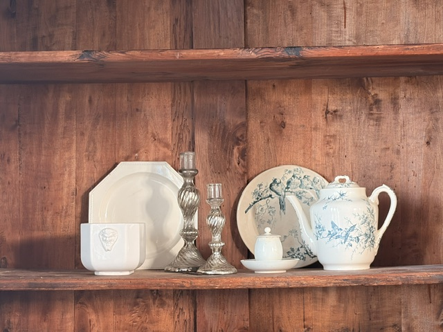
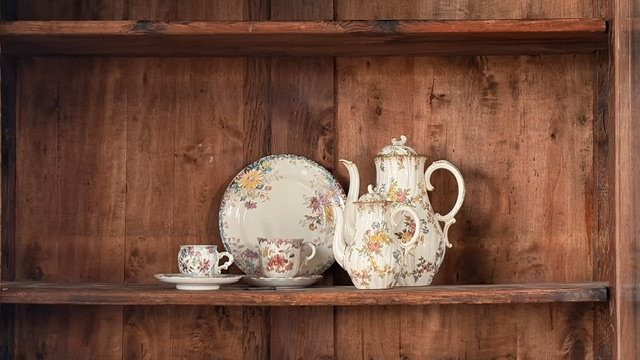
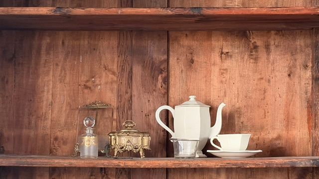
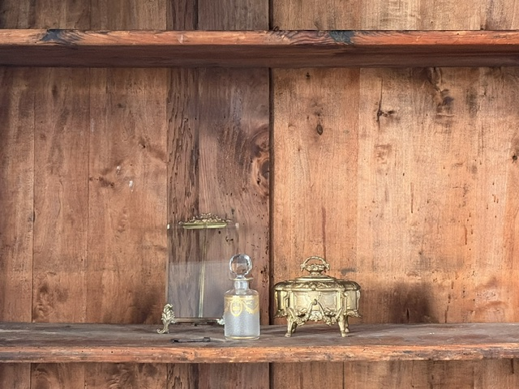
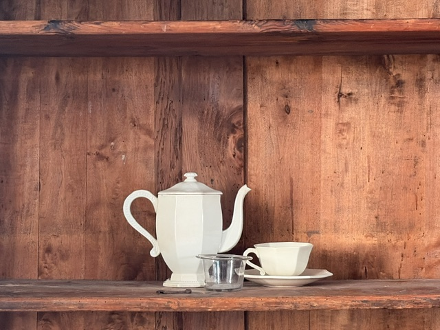

Vaisselle ancienne,
charme français
Vaisselle Antique, c'est une petite sélection de vaisselle ancienne et vintage : assiettes en terre de fer, verres soufflés, tasses et pots, chinés un par un.
Chaque pièce est choisie pour son histoire et son charme, nettoyée avec soin, puis photographiée sous tous les angles pour que vous sachiez exactement ce que vous recevrez.


Nos trouvailles
Des pièces simples et singulières, chinées en France, pour habiller votre table avec caractère.
voir la boutiqueChaque étagère raconte une histoire : une cafetière blanche, un flacon en verre, un coffret en laiton doré… puis, de plus près, les détails qui font leur charme.



La boutique est née sur Instagram, où chaque nouvelle trouvaille est présentée en premier. Suivez-nous pour découvrir les pièces avant tout le monde.
Suivre sur Instagram